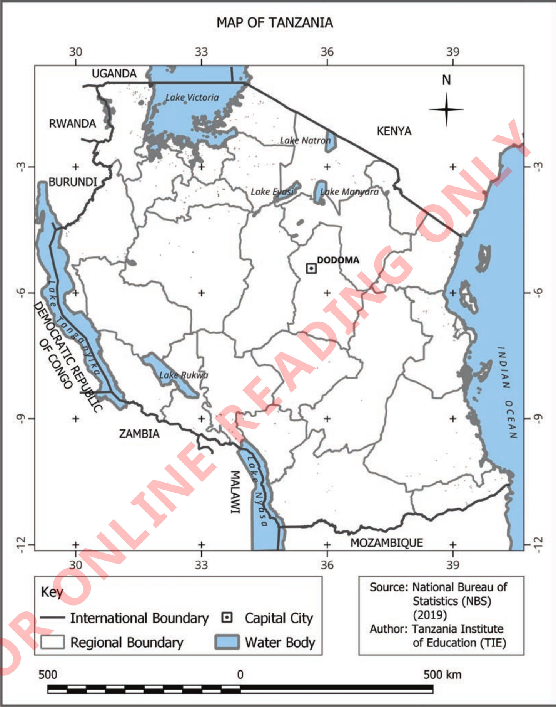
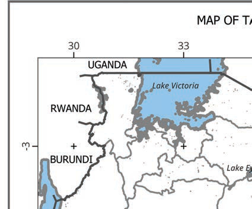
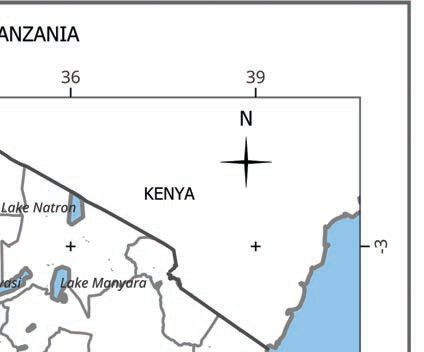
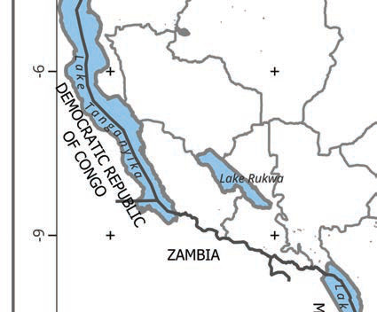
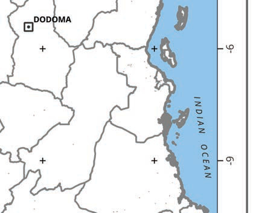
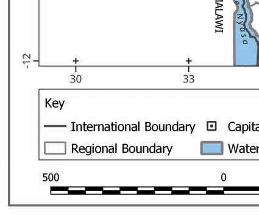

FOR ONLINE READING ONLY
MAP OF TANZANIA
30
33
36
39
UGANDA
RWANDA
BURUNDI
Lake Victoria
KENYA
N
Lake Natron
Lake Eyasi
Lake Manyara
-3
DEMOCRATIC REPUBLIC OF CONGO
Lake Tanganyika
Lake Rukwa
ZAMBIA
-6
DODOMA
INDIAN OCEAN
-9
MALAWI
Lake Nyasa
MOZAMBIQUE
-12
Key
International Boundary
Capital City
Regional Boundary
Water Body
Source: National Bureau of Statistics (NBS) (2019)
Author: Tanzania Institute of Education (TIE)
500
0
500 km





Figure 8: Essential elements of a map